Motion of a planet around a fixed center : compressions of angular data.
1 Newton’s compression.
Newton’s equations (here in hamiltonian form) - together with the initial conditions set - accurately compress the data of measured angles θ (I1, I2 and I3 are the three autonomous invariants) :
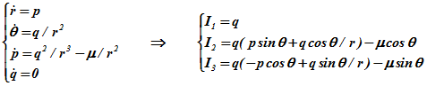

Initial conditions :
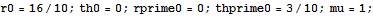

Autonomous invariants :
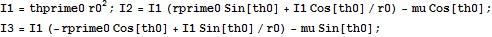
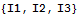
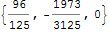

Period of the motion :
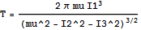
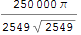
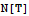
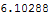

Trajectory :
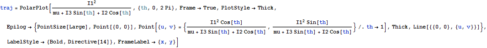
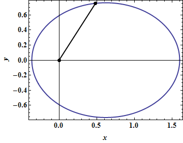
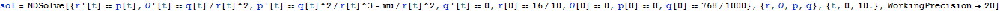
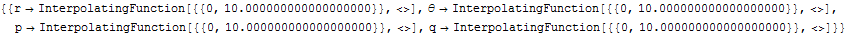
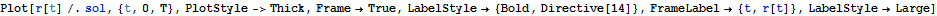
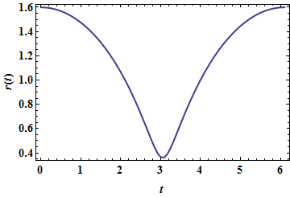
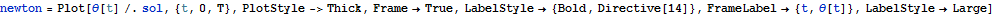
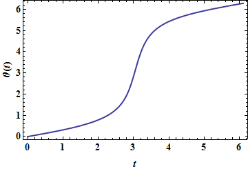

Distance between center and focus :
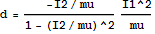
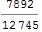

2 Hipparchus-like compression :
A pure kinematical compression of θ as a function of t is possible on the ground of the Fourier-like false position, {x(t), y(t)} = {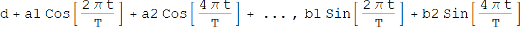+ ... } :
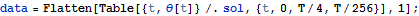
First approximation : one harmonic with period T (a1 and b1) :
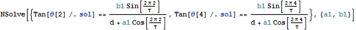
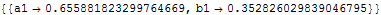

A very off-centered elliptic trajectory :
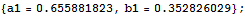
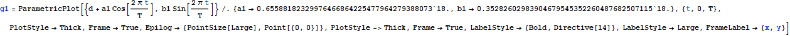
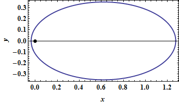
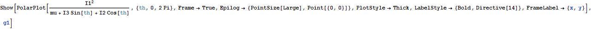
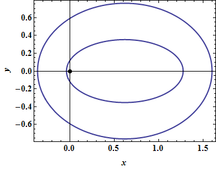

A geometrical construction involving two generating circles :
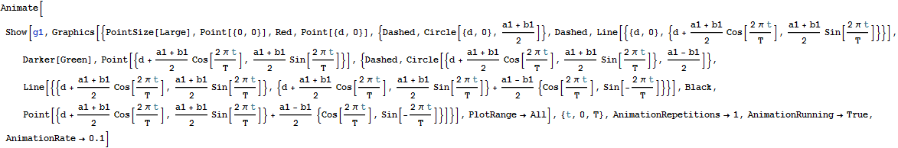
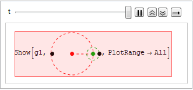
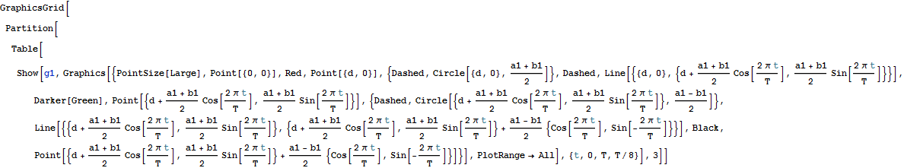
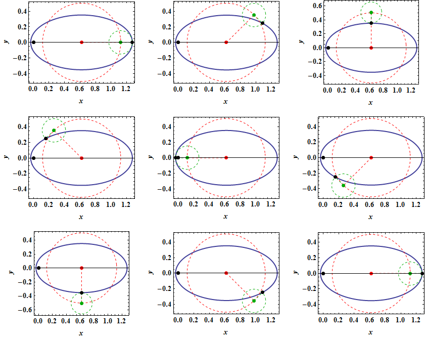
How well θ(t) is approximated (Newton in black and Hipparchus in red) :
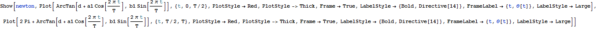
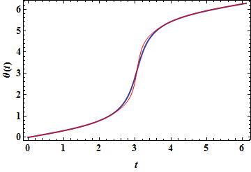
Absolute error :
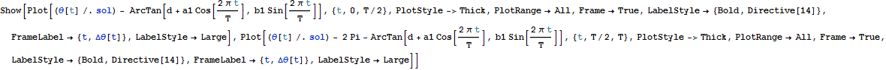
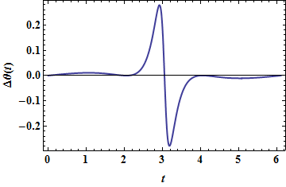
Second approximation : two harmonics with periods T and T/2 (a1, a2, b1 and b2) :
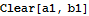
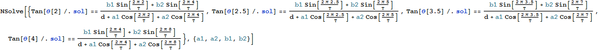
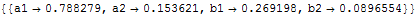

This time, θ(t) is well approximated (Newton in black and Hipparchus in red) :
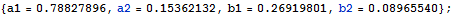
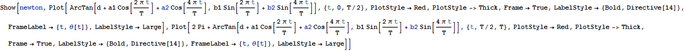
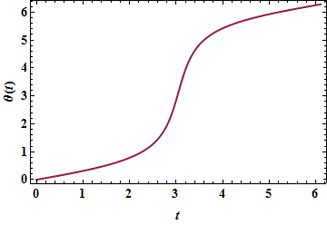
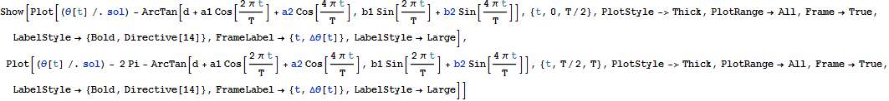
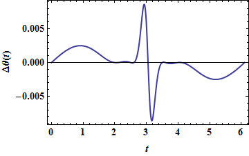

The trajectory is no more an ellipse (!) :
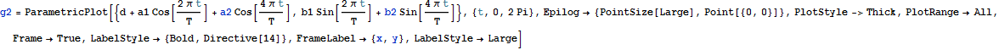
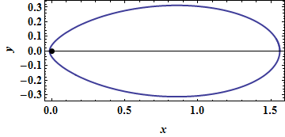
A geometrical construction involving four generating circles :
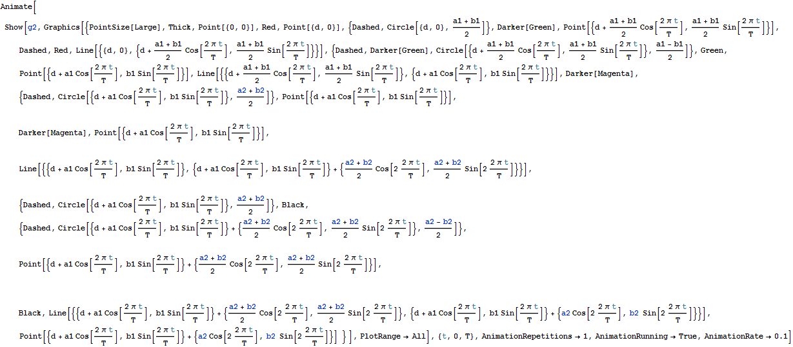
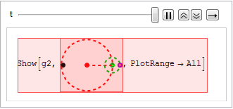
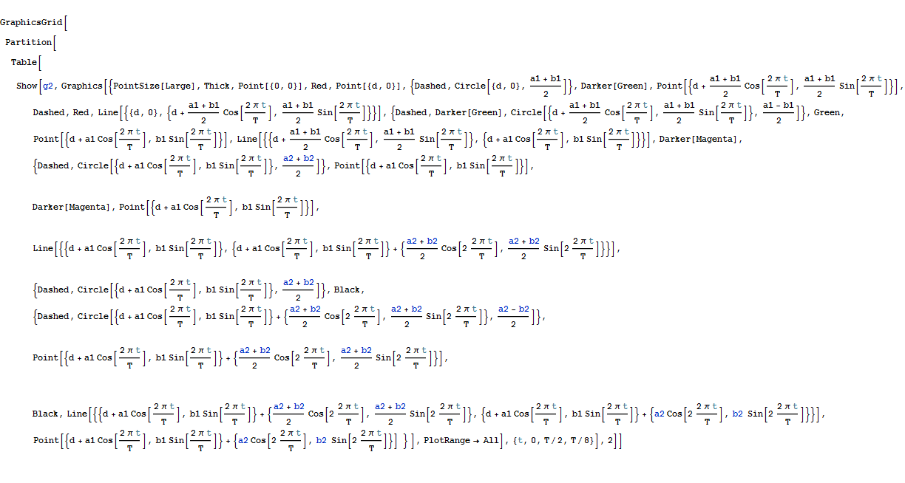
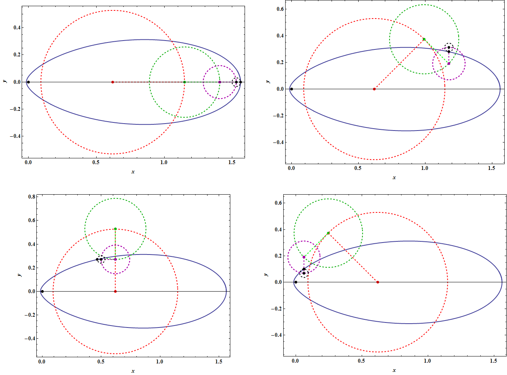